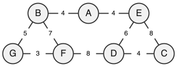

24-NSI0A-3
-

-
Le chemin A — E – D de longueur de 10 km est le plus court chemin entre A et D.
-
\[G_1 = \begin{pmatrix} \ 0 & 4 & 0 & 0 & 4 & 0 & 0 \ \\ \ 4 & 0 & 0 & 0 & 0 & 7 & 5 \ \\ \ 0 & 0 & 0 & 4 & 8 & 0 & 0 \ \\ \ 0 & 0 & 4 & 0 & 6 & 8 & 0 \ \\ \ 4 & 0 & 8 & 6 & 0 & 0 & 0 \ \\ \ 0 & 7 & 0 & 8 & 0 & 0 & 3 \ \\ \ 0 & 5 & 0 & 0 & 0 & 3 & 0 \ \\ \end{pmatrix} \]
-
Un parcours en largeur du graphe G2 depuis A peut donner l'ordre :
A → B → C → H → I → D → E → G → F L'ordre de visite des sommets d'une même couleur est arbitraire.
-
La fonction
cherche_itinerairesest récursive car elle s'appelle elle-même (ligne 8). -
La fonction
cherche_itinerairesexplore récursivement tous les chemins possibles à partir du sommetstartdans le grapheG. Au cours de cette exploration, elle ajoute dans la listechaineles chemins qui terminent par le sommetend. Un chemin est stocké sous la forme d'une liste de sommets. -
Lors du premier appel de la fonction
itineraires_court, la liste globaletab_itinerairesest intialement vide. La fonctioncherche_itinerairespeut alors y stocker correctement les itinéraires trouvés.Cependant, cette liste n'est jamais réinitialisée en une liste vide. Ainsi, lors d'un second appel à
itineraires_court, les nouveaux itinéraires sont ajoutés aux précédents, ce qui fausse par conséquent le résultat deitineraires_court.Pour éviter cette erreur, une solution serait de réinitialiser
tab_itinerairesau début de la fonctionitineraires_court. -
Un SGBD permet par exemple d'assurer la cohérence des données (en évitant les doublons ou incohérences) et leur sécurité (en contrôlant les accès et en protégeant contre les pertes ou modifications non autorisées).
-
Le schéma relationnel de la table
ville:ville(id: INT, nom: TEXT, num_dep: INT, nombre_hab: INT, superficie: FLOAT) -
L'attribut
id_villede la tablesportest une clé étrangère qui fait référence à la clé primaireidde la tableville. Il permet de faire ainsi le lien entre ces deux tables. -
nomChamonix